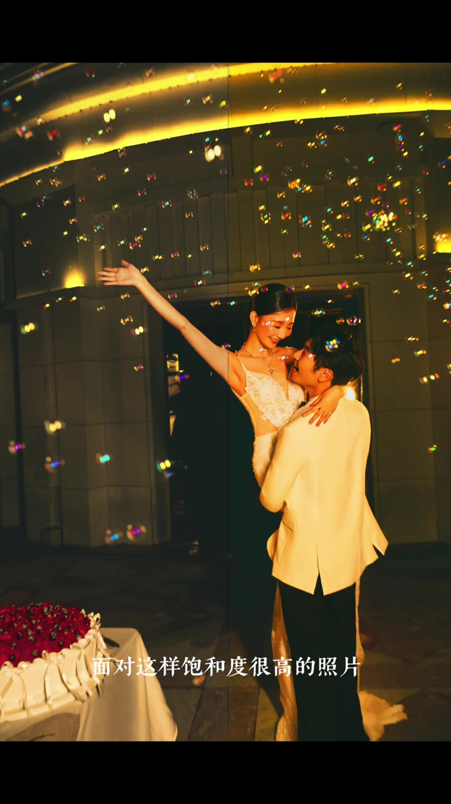
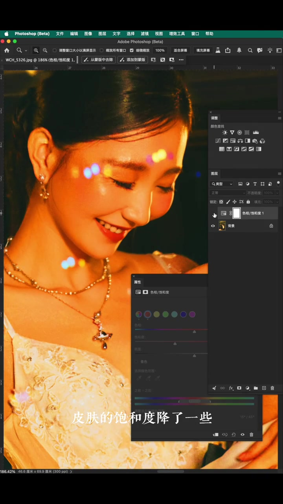
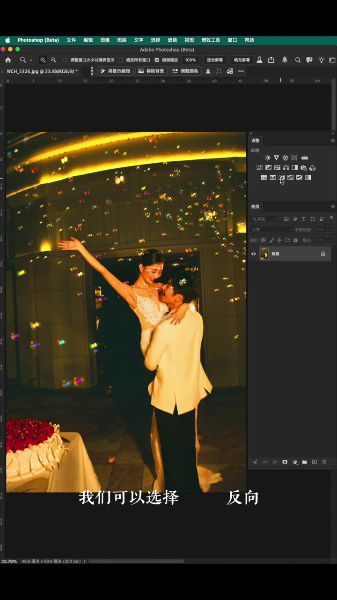
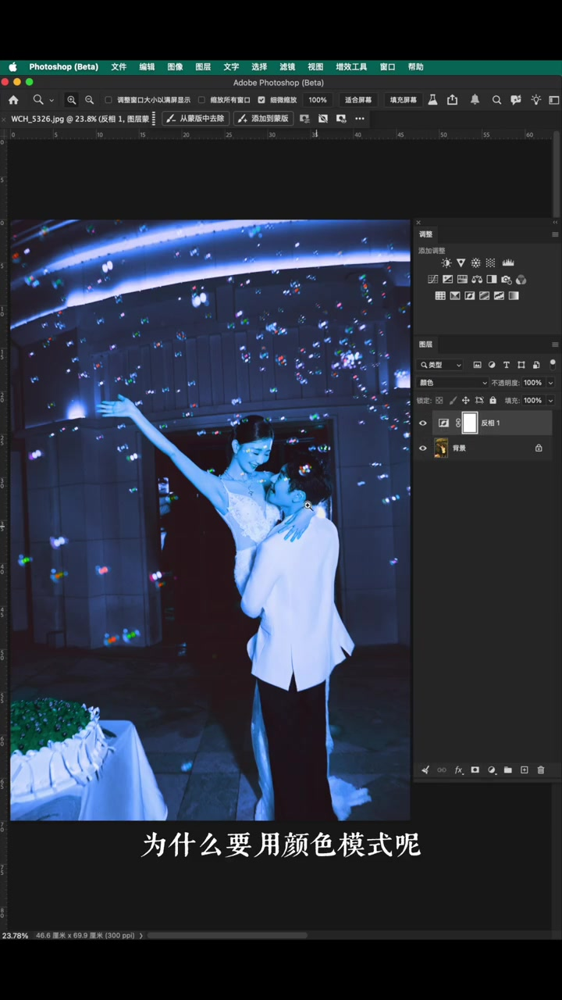
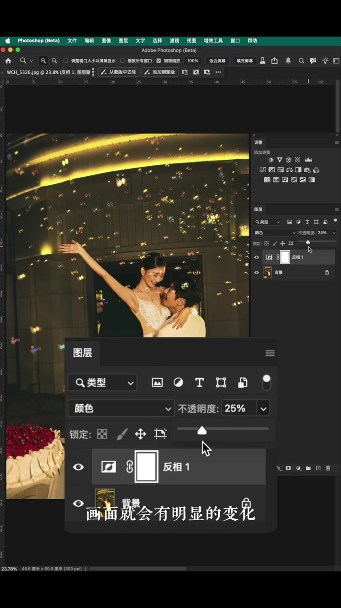
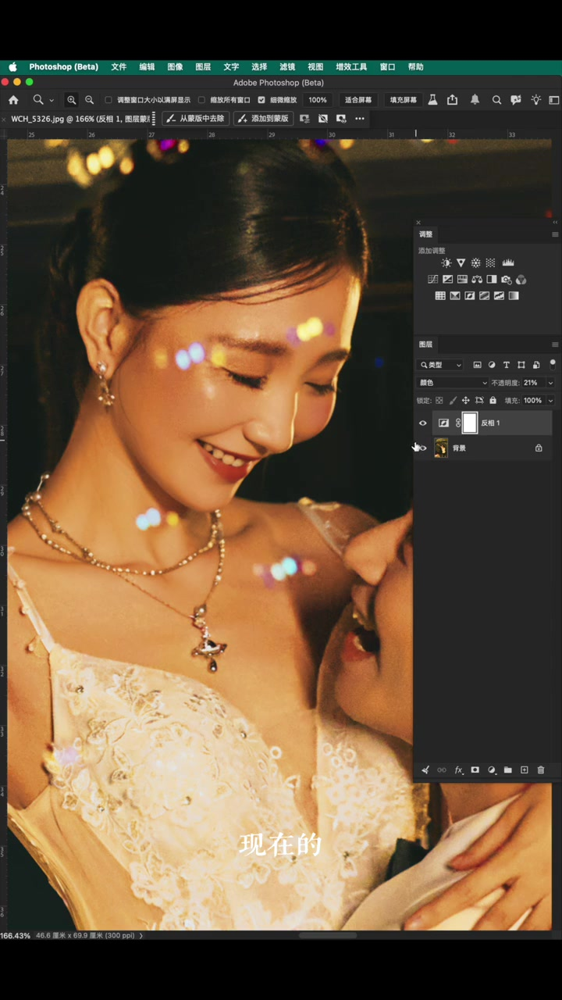
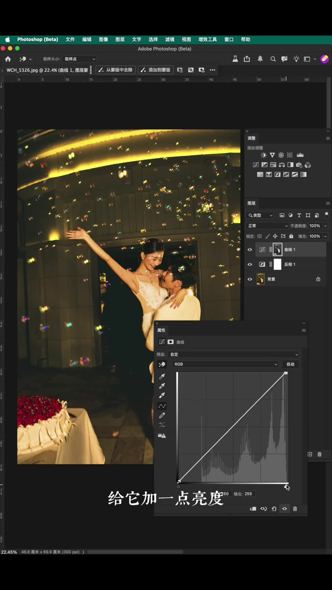
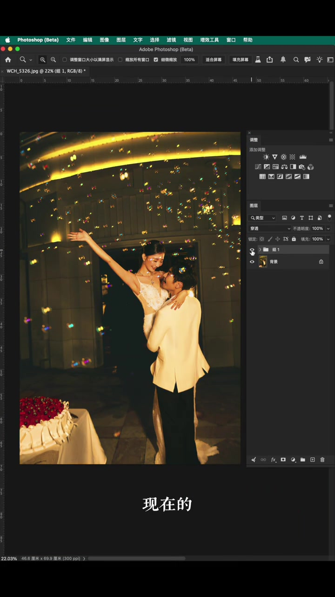

先承认：高饱和照片不能只会“拉饱和度滑块”
视频开场是一张色彩非常浓的人像。博主说，大家的第一反应通常是降低饱和度，甚至专门去选皮肤区域来减饱和。放大看，皮肤确实淡了一些，但嘴唇颜色会发脏，整体画面依旧刺眼——这就是标题里“同样是降饱和，效果却完全不同”的对比起点。
直接降饱和：皮肤淡了，嘴唇却脏了
博主先在图层面板里演示常规做法：选中皮肤相关区域后拉低饱和度。Whisper 记录为“捡皮肤的颜色”“皮肤的饱和度将来一些”，结合画面可以判断是在做局部去饱和。问题是副作用立刻出现——嘴唇边缘发灰发脏，而背景与高饱和色块仍然很跳，说明“只减饱和”并没有真正解决高饱和人像的舒适性问题。
原话依据 [00:08]：“但是嘴巴的颜色却变得很脏了，而整体的颜色还是很刺眼。”


新建反向图层，再改成“颜色”混合模式
博主转而分享“非常好用的方法”：复制图层后执行反向（Invert）。为什么要反向？因为反向会为画面里每一种颜色生成对应的互补色。接着把混合模式从“正常”改为“颜色”（Color）。为什么用颜色模式？因为只想让互补色参与色相与饱和度的调整，而不想改变明暗关系——这是整套方法区别于直接拉饱和度的关键。
原话依据 [00:18]：“因为反向能生成画面里每一种颜色对应的互补色。” · [00:29]：“因为我只想让互补色来参与颜色的调整，并不想改变画面的明暗关系。”


把不透明度往回收，画面立刻变舒服
设置好颜色模式后，博主把图层不透明度逐步降低。他说“注意看，画面就会有明显的变化”，并认为到这一步效果已经可用。随后切换“之前 / 现在”的对比：虽然同样是做了降饱和方向的调整，但新方法下肤色还能保留原来的质感，颜色也更自然——这正是标题所强调的差异。
原话依据 [00:39]：“你看这个颜色是不是比刚才那个要舒服很多。” · [00:47]：“肤色还能保留原来的质感，颜色也更加的自然。”


画面变灰怎么办？曲线提亮，红通道补一点肤色
博主也诚实说明副作用：这样调整之后，画面难免会变灰，色彩也会丢失一些。补救步骤是选择“高光”，打开曲线，给亮区加一点亮度，再给暗部加一点对比。放大后进入红通道，给皮肤加“一点点红色，加一点点就够了”。对比前后，之前有点灰的版本被拉回正常色彩。
原话依据 [00:52]：“画面难免会变灰，色彩也会丢失一些。” · [01:07]：“给皮肤加一点点红色，加一点点就够了。”

整体前后对比：别急着先拉饱和度
最后博主再次展示整图“之前 / 现在”的效果，并给出使用建议：如果以后遇到这种高饱和的照片，别着急直接调整饱和度，可以先试试这套反向 + 颜色模式的方法，“画面真的会舒服很多”。
原话依据 [01:18]：“别着急调整饱盒度，可以先试试这个方法，画面真的会舒服很多。”（Whisper 将“饱和度”误识为“饱盒度”。）

1 分 22 秒，方法留在图层里
这条视频没有讲色彩理论长篇大论，而是用一条可复现的图层流程回答标题：同样是想让高饱和人像变舒服，直接拉饱和度滑块与“反向 → 颜色模式 → 降不透明度 → 曲线 → 红通道微调”得到的结果完全不同。具体参数需因片而异，但思路是先用互补色平衡过饱和，再单独找回亮度与肤色。